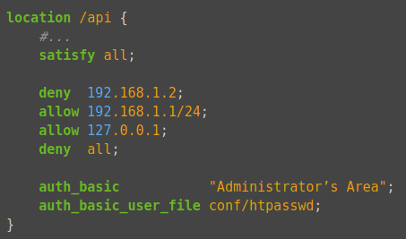

Práctica 2.3 – Autenticación en Nginx
Requisitos antes de comenzar la práctica
Atención, muy importante antes de empezar
- La práctica 2.2 ha de estar funcionando correctamente
- No empezar la práctica antes de tener la 2.2 funcionando y comprobada
Introducción
En el contexto de una transacción HTTP, la autenticación de acceso básica es un método diseñado para permitir a un navegador web, u otro programa cliente, proveer credenciales en la forma de usuario y contraseña cuando se le solicita una página al servidor.
La autenticación básica, como su nombre lo indica, es la forma más básica de autenticación disponible para las aplicaciones Web. Fue definida por primera vez en la especificación HTTP en sí y no es de ninguna manera elegante, pero cumple su función.
Este tipo de autenticación es el tipo más simple disponible pero adolece de importantes problemas de seguridad que no la hacen recomendable en muchas situaciones. No requiere el uso ni de cookies, ni de identificadores de sesión, ni de página de ingreso.
Sitio web que requerirá autenticación
En esta práctica vamos a proveer de autenticación a una página web completa o a una parte de ella. Para ello utilizaremos el sitio web de Perfect Learn, que es la web estática creada en la Tarea 2 de la práctica anterior. Supongamos que a ese sitio lo hemos llamado tarea2 y sus contenidos están en una carpeta con el mismo nombre.

Creando el fichero de passwords
Para esta práctica podemos utilizar la herramienta htpasswd para crear las contraseñas. Dicha herramienta se encuentra en el paquete apache2-utils así que lo primero será instalarlo
Crearemos un archivo oculto llamado “.htpasswd” en el directorio de configuración /etc/nginx donde guardar nuestros usuarios y contraseñas (la -c es para crear el archivo) e incluiremos es primer usuario y contraseña para el usuario "profe":
Te pedirá introducir la contraseña y repetirla.
Comprueba la existencia y contenido del archivo creado.
Para el resto de usuarios usaremos la misma orden, pero sin "-c" ya que el fichero ya existirá.
- Crea dos usuarios, uno con tu nombre y otro con tu primer apellido
- Comprueba que el usuario y la contraseña aparecen cifrados en el fichero:
Configurando el servidor Nginx para usar autenticación básica
Editaremos la configuración del server block sobre el cual queremos aplicar la restricción de acceso.
Info
Recuerda que un server block es cada uno de los dominios (server {...} dentro del archivo de configuración) de alguno de los sitios web que hay en el servidor.
Debemos decidir qué recursos estarán protegidos. Nginx permite añadir restricciones a nivel de servidor o en un location (directorio o archivo) específico. Para nuestro ejemplo, vamos a proteger el document root (la raíz, la página principal) de nuestro sitio.
Utilizaremos la directiva auth_basic dentro del location y le pondremos el nombre a nuestro dominio que será mostrado al usuario al solicitar las credenciales. Por último, configuramos Nginx para que utilice el fichero que previamente hemos creado con la directiva auth_basic_user_file :
server {
listen 80;
listen [::]:80;
root /var/www/tarea2/html/simple-static-website;
index index.html index.htm index.nginx-debian.html;
server_name tarea2;
location / {
auth_basic "Área restringida";
auth_basic_user_file /etc/nginx/.htpasswd;
try_files $uri $uri/ =404;
}
}
Probando la nueva configuración
Cuidado
Una vez os autenticáis con éxito, el navegador guardará esta autencación exitosa y no volverá a pediros usuario/contraseña.
Así pues, para cada una de las cuestiones siguientes, si queréis volver a probar a autenticaros, tendréis que abriros una Nueva ventana privada o Nueva ventana de incógnito del navegador.
Comprobación 1
Comprueba desde tu máquina física/anfitrión que puedes acceder a http://tarea2 y que se te solicita autenticación
Comprobación 2
Comprueba que si decides cancelar la autenticación, se te negará el acceso al sitio con un error. ¿Qué error es?
Tareas
Tarea 1
-
Intenta entrar primero con un usuario erróneo y luego con otro correcto. Puedes ver todos los sucesos y registros en los logs access.log y error.log
-
Comprueba los logs donde se vea que intentas entrar primero con un usuario inválido y con otro válido. Busca dónde podemos ver los errores de usuario inválido o no encontrado, así como donde podemos ver el número de error que os aparecía antes
Autenticación de una parte de la web
Cuando hemos configurado el siguiente bloque:
location / {
auth_basic "Àrea restringida";
auth_basic_user_file /etc/nginx/.htpasswd;
try_files $uri $uri/ =404;
}
La autenticación se aplica al directorio/archivo que le indicamos en la declaración del location y que en este caso el raíz /.
Así pues, esta restricción se aplica al directorio raíz o base donde residen los archivos del sitio web y que es:
Y a todos los archivos que hay dentro, ya que no hemos especificado ninguno en concreto.
Ahora bien, vamos a probar a aplicar autenticación sólo a una parte de la web. Vamos a intentar que sólo se necesite autenticacíón para entrar a la parte de 'CONTACT US'. Esta sección se corresponde con el archivo contact.html dentro del directorio raíz.
Tarea 2
Borra las dos líneas que hacen referencia a la autenticación básica en el location del directorio raíz. Tras ello, añade un nuevo location debajo con la autenticación básica para el archivo/sección contact.html únicamente.
Warning
Fijáos que debéis tener cuidado porque la última línea del archivo ha de ser } que cierra la primera línea server { del archivo.
Comprueba ahora que si accedes a la página principal no te solicita autenticación pero si intentas acceder a 'CONTACT US' si te la solicita.
Combinación de la autenticación básica con la restricción de acceso por IP
La autenticación básica HTTP puede ser combinada de forma efectiva con la restricción de acceso por dirección IP. Se pueden implementar dos escenarios:
-
Un usuario debe estar ambas cosas, autenticado y tener una IP válida
-
Un usuario debe o bien estar autenticado, o bien tener una IP válida
Veamos cómo lo haríamos:
-
Cómo permitir o denegar acceso sobre una IP concreta (directivas allow y deny, respectivamente). Dentro del block server o archivo de configuración del dominio web, que recordad está en el directorio sites-available:

El acceso se garantizará a la IP
192.168.1.1/24, excluyendo a la dirección192.168.1.2.Hay que tener en cuenta que las directivas allow y deny se irán aplicando en el orden en el que aparecen el archivo.
Aquí aplican sobre la
location /api(esto es sólo un ejemplo de un hipotético directorio o archivo), pero podrían aplicar sobre cualquiera, incluida todo el sitio web, la location raíz/.La última directiva
deny allquiere decir que por defecto denegaremos el acceso a todo el mundo. Por eso hay que poner los allow y deny más específicos justo antes de esta, porque al evaluarse en orden de aparición, si los pusiéramos debajo se denegaría el acceso a todo el mundo, puesto quedeny allsería lo primero que se evaluaría. -
Combinar la restricción IP y la autenticación HTTP con la directiva satisfy.
Si establecemos el valor de la directiva a “all”, el acceso se permite si el cliente satisface ambas condiciones (IP y usario válido). Si lo establecemos a “any”, el acceso se permite si se satisface al menos una de las dos condiciones.

Vamos a probar lo anterior. Para ello deberermos obtener, en primer lugar, la IP desde la que le llegan las peticiones a nuestro servidor nginx cuando pedimos una página web. Lo puedes obtener desde el archivo de log de nginx
Una vez obtenida la IP, puedes hacer las tareas siguientes:
Tarea 3
Configura Nginx para que no deje acceder con la IP de la máquina anfitriona a contact.html. Modifica su server block o archivo de configuración. Comprueba cómo se deniega el acceso mostrando la página de error en el navegador y el mensaje de error de error.log
Tarea 4
Configura Nginx para que solo se pueda acceder a contact.html desde tu máquina anfitriona y se tenga que tener tanto una IP válida como un usuario válido, ambas cosas a la vez, y comprueba que sí puede acceder sin problemas
Cuestiones finales
Cuestión 1
Supongamos que yo soy el cliente con la IP 172.1.10.15 e intento acceder al directorio web_muy_guay de mi sitio web, equivocándome al poner el usuario y contraseña. ¿Podré acceder?¿Por qué?
Cuestión 2
Supongamos que yo soy el cliente con la IP 172.1.10.15 e intento acceder al directorio web_muy_guay de mi sitio web, introduciendo correctamente usuario y contraseña. ¿Podré acceder?¿Por qué?
Cuestión 3
Supongamos que yo soy el cliente con la IP 172.1.10.15 e intento acceder al directorio web_muy_guay de mi sitio web, introduciendo correctamente usuario y contraseña. ¿Podré acceder? ¿Por qué?
Cuestión 4
A lo mejor no sabéis que tengo una web para documentar todas mis excursiones espaciales con Jeff, es esta: Jeff Bezos y yo
Supongamos que quiero restringir el acceso al directorio de proyectos porque es muy secreto, eso quiere decir añadir autenticación básica a la URL:Proyectos
Completa la configuración para conseguirlo: